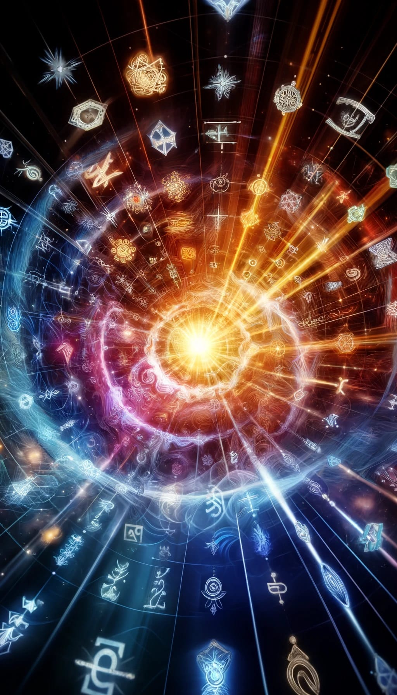
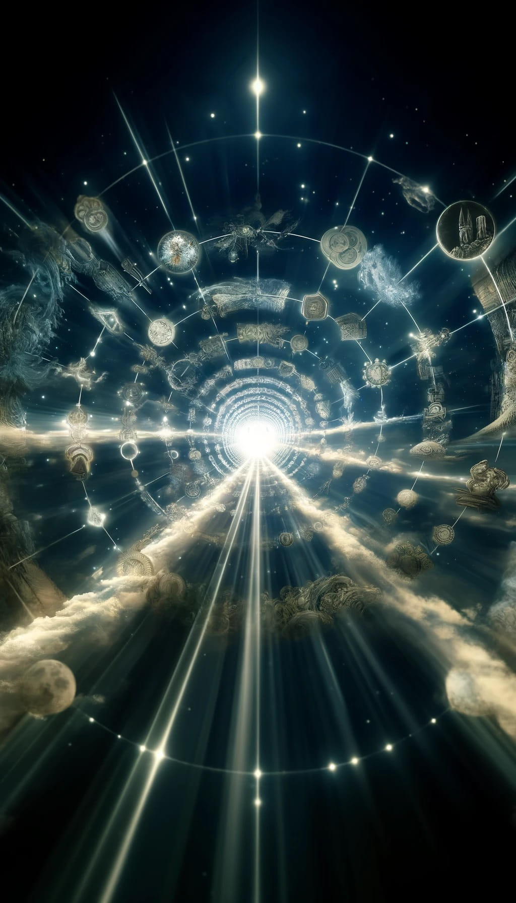

Symbolic Resonance: Unveiling the Interconnectedness of Ideas and Experiences
Introduction
Symbolic resonance is a captivating phenomenon that occurs when symbols, patterns, or events evoke similar meanings, emotions, or responses across different contexts or time periods. It is a testament to the profound interconnectedness of human experiences and the power of symbols to transcend individual perspectives. In this article, we will explore the concept of symbolic resonance, its role in The Collective Mind Object, and its significance in understanding the unified nature of consciousness and the universe.
Universe 00110000
The Emergence of Symbolic Resonance
At its core, symbolic resonance emerges when the significance or impact of a symbol extends beyond its immediate appearance or occurrence. It creates connections that bridge the gaps between disparate experiences, cultures, and eras. When a symbol resonates, it taps into a collective understanding that goes beyond personal interpretations, revealing a deeper layer of meaning that is shared across time and space.
Limited Computational Resources and Optimization
Within the simulation hypothesis framework, symbolic resonance can be seen as a mechanism for optimizing and compressing information in a simulated reality constrained by limited computational resources. As simulations must operate efficiently to handle complex scenarios without overwhelming the underlying infrastructure, symbolic resonance helps streamline processes, reduce redundancy, and focus on generating meaningful interactions and experiences.
Symbolic Resonance in the Collective Mind Object
In the context of the The Collective Mind Object, where the existence of a higher-dimensional space where all subjective experiences are interconnected, symbolic resonance plays a vital role in reducing informational redundancy and highlighting essential patterns and connections. By emphasizing the most significant and impactful elements, symbolic resonance contributes to the creation of a cohesive narrative that requires fewer resources.
Examples of Symbolic Resonance
Symbolic resonance can be observed in various phenomena, such as historic recurrence and déjà vu. Historic recurrence refers to the cyclical repetition of similar events or patterns throughout history, suggesting an underlying interconnectedness of human experiences. Déjà vu, the uncanny feeling of having experienced a situation before, can be seen as a momentary glimpse into the Collective Mind Object, where the individual taps into a shared, resonant experience.
Universe 00110000
Compression and Transcendence
Moreover, symbolic resonance acts as a compression mechanism within the Collective Mind Object. By distilling complex ideas and experiences into optimized, resonant forms, it allows for more efficient storage and processing of information. This compression ensures that the essential essence of an experience is preserved, while the less significant details are filtered out.
One of the most fascinating aspects of symbolic resonance is its ability to transcend individual perspectives. When we encounter a symbol that resonates, we tap into a collective understanding that goes beyond our personal experiences. It is as if we are glimpsing into the higher-dimensional Collective Mind Object, where the interconnectedness of all experiences becomes apparent.
Conclusion
In conclusion, symbolic resonance is a profound phenomenon that offers a glimpse into the interconnectedness of ideas and experiences. By highlighting essential patterns and connections, it contributes to the creation of a cohesive narrative that transcends individual perspectives. Through the lens of the Collective Mind Object, symbolic resonance emerges as a powerful tool for understanding the unified nature of consciousness and the universe. As we continue to explore the depths of symbolic meaning, we may uncover new insights into the fundamental nature of reality and our place within it.